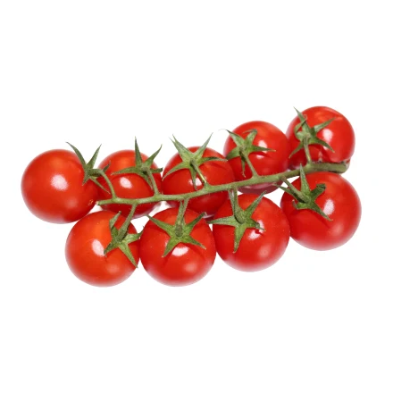
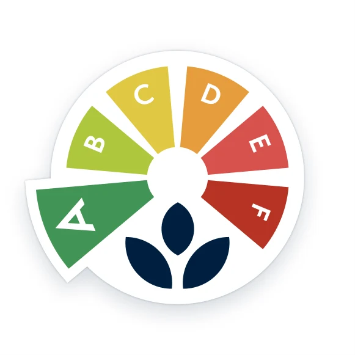

Prodotto verificato da MAMMA
Pomodoro di Pachino IGP


- Lotto
- PCH-26-1147
- Raccolto il
- 12 novembre 2026
- Azienda
- Azienda Agricola Corallo, Pachino (SR)
- Zona
- Zona protetta
Indicazione geografica protetta
Riconosciuto in tutta Europa dal 2003
Solo i pomodori coltivati in quattro comuni tra Siracusa e Ragusa possono chiamarsi Pachino IGP. Sole, mare e terreni salmastri li rendono unici al mondo.
Area di produzione
Pachino · Portopalo di Capo Passero · Noto · IspicaÈ un pezzo di Made in Italy che viaggia nel mondo. Per questo MAMMA ne protegge ogni giornata di sole.
La sua stagione
Dal trapianto alla raccolta MAMMA ha seguito questo pomodoro ogni giorno.
- 2 settembreTrapianto
- 64giorni di sole garantito con gli specchi solari
- 3grandinate evitate con i razzi antigrandine
- 12piogge spostate prima di arrivare
- 12 novembreRaccolta nel giorno programmato
Chi l'ha coltivato
Coltivano a Pachino dal 1987. Dal 2024 la loro azienda è in zona protetta, e i 14 lavoratori stagionali hanno tutte le giornate di lavoro garantite.
Dove è andata la pioggia
Per proteggere questo raccolto, 12 piogge di compensazione sono state inviate in Sardegna, tra Oristano e il Campidano. Grazie ai cittadini e agli agricoltori sardi per il loro contributo al Made in Italy.